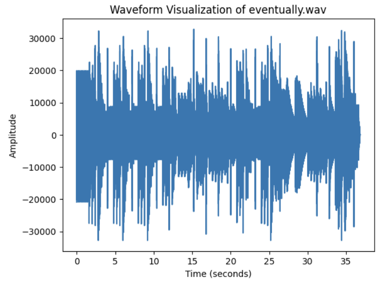
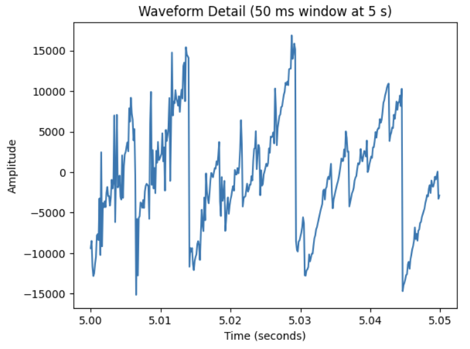
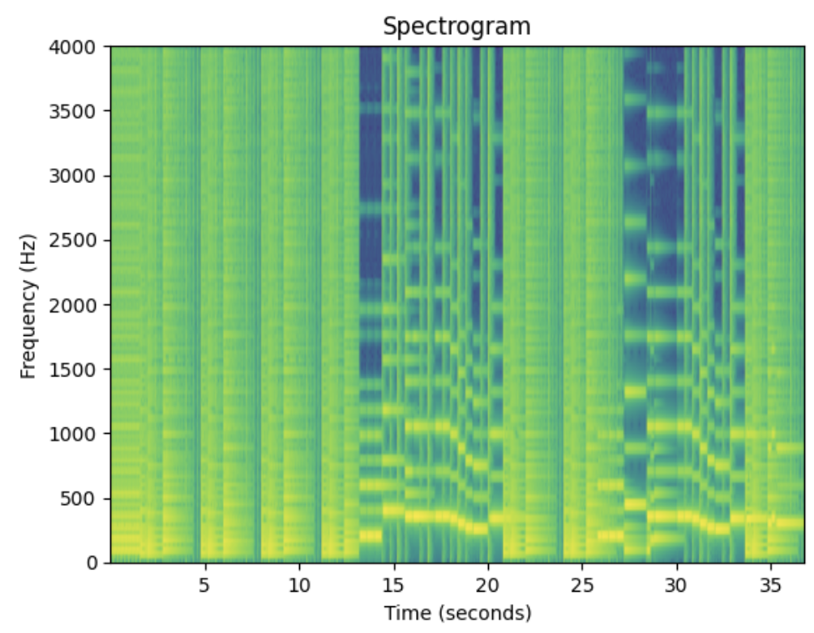

Music Synthesis in MATLAB



→ scroll to see more →
Listen to the synthesized song "Eventually"
Overview
A MATLAB project to synthesize a recognizable song from scratch using signal processing fundamentals — no audio samples, no external libraries, just math. I chose to recreate "Eventually" by Tame Impala, specifically its distinctive bass riff, because I love the song and was curious whether I could capture its feel purely from first principles.
The final composition layers four synthesized instruments — bass, vocals, bells, and a custom snare drum — assembled measure-by-measure with effects including harmonics, exponential decay, piecewise attack/release envelopes, and reverb. The output is a renderable .wav file.
Technical Details
- Note system: Programmatically generated 72 notes across 6 octaves using equal-temperament tuning (
f = 27.5 × 2^(i/12)), each stored as a frequency variable - Score assembly: Each instrument part was generated as a vector and summed measure-by-measure; measures were then concatenated into a final song vector and normalized
- Bass line: Sawtooth waves with two additional harmonic overtones (2nd and 3rd) for a full, aggressive sound characteristic of the original
- Vocal line: Sine waves with frequency-modulated harmonics and piecewise attack/sustain/release envelopes to approximate the smooth, airy quality of the song's lead
- Bells: Sine waves with exponentially decaying frequency modulation to simulate the metallic shimmer of a bell tone
- Snare drum: No fixed pitch — synthesized by summing 4,000 closely-spaced sine waves, scaling each sample by a random value, then applying exponential decay; the result closely mimics the broadband noise and transient character of a real snare hit
- Reverb: Implemented by adding scaled, delayed copies of the signal at 0.2s and 0.4s offsets, applied to the full mix
- Decay envelopes: Every note uses piecewise linear attack/sustain/decay profiles tuned per-instrument, on top of exponential amplitude decay
Outcome
The final output captures the feel of "Eventually" well enough to be recognizable. The bass riff translates particularly well — the sawtooth waveform and harmonic layering give it the same boomy aggression as the original. The snare was the most technically interesting challenge: a drum has no pitch, so the standard note-generation approach doesn't apply. Layering thousands of frequencies and randomizing their amplitudes turned out to be the right move, and the result is a convincing approximation of a snare hit synthesized entirely from code.